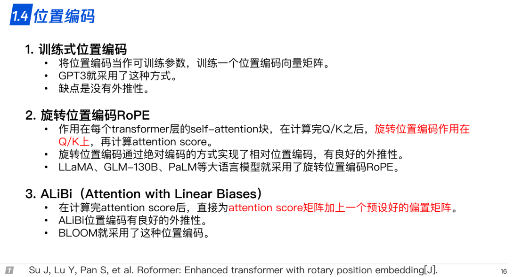
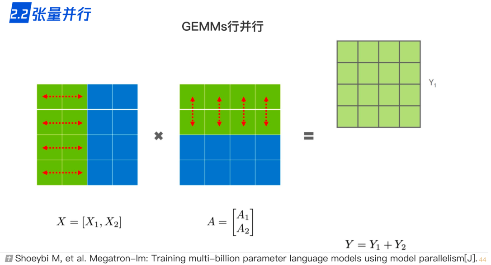

主流大语言模型的技术原理细节
原文链接：主流大语言模型的技术原理细节 (qq.com)
作者：spring1.比较 LLaMA、ChatGLM、Falcon 等大语言模型的细节：tokenizer、位置编码、Layer Normalization、激活函数等。
2. 大语言模型的分布式训练技术：数据并行、张量模型并行、流水线并行、3D 并行、零冗余优化器 ZeRO、CPU 卸载技术 ZeRo-offload、混合精度训练、激活重计算技术、Flash Attention、Paged Attention。
3. 大语言模型的参数高效微调技术：prompt tuning、prefix tuning、adapter、LLaMA-adapter、 LoRA。
0. 大纲
1. 大语言模型的细节
1.0 transformer 与 LLM
1.1 模型结构
1.2 训练目标

1.3 tokenizer
1.4 位置编码

1.5 层归一化

1.6 激活函数
1.7 Multi-query Attention 与 Grouped-query Attention
1.8 并行 transformer block
1.9 总结-训练稳定性
2. LLM 的分布式预训练
2.0 点对点通信与集体通信
2.1 数据并行
2.2 张量并行

2.3 流水线并行
2.4 3D 并行
2.5 混合精度训练
2.6 激活重计算
2.7 ZeRO，零冗余优化器

2.8 CPU-offload，ZeRO-offload
2.9 Flash Attention


2.10 vLLM: Paged Attention
3. LLM 的参数高效微调
3.0 为什么进行参数高效微调？

3.1 prompt tuning
3.2 prefix tuning
3.3 adapter

3.4 LLaMA adapter
3.5 LoRA
3.6 实验比较
4. 参考文献
All articles in this blog are licensed under CC BY-NC-SA 4.0 unless stating additionally.
Comment